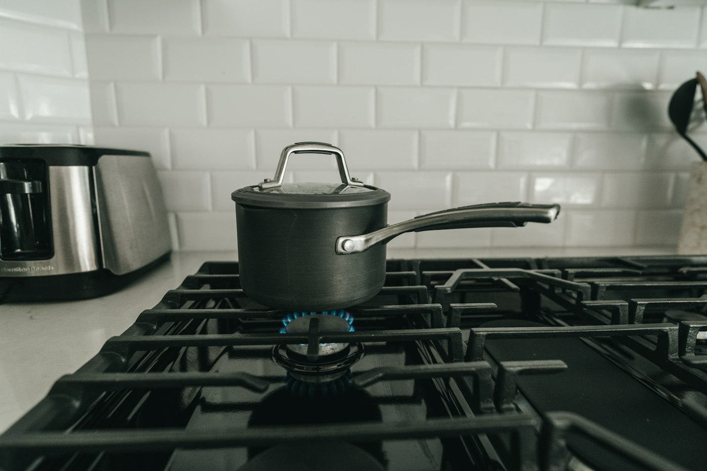

Guides
Plain answers about the tabs you keep open, and how to keep them without keeping them open.
-

Too many tabs open in Chrome? Keep them without keeping them open
Why tabs pile up, what each of Chrome's own tools does about it, and how to close a pile of tabs without losing the thought behind them.
-

How to save Chrome tabs for later and bring the whole set back
Four ways to save tabs for later in Chrome, what each one keeps, and how to reopen a whole set of tabs in one click.
-

How to find a tab you lost in Chrome
Search every open tab, jump to one from the address bar, get back a tab you closed, and search the tabs you saved for later.
-

How to pick up where you left off in Chrome
Reopen yesterday's tabs, recover a closed window, and come back to a task days later, with Chrome's settings and with Simmer.
-

OneTab, Session Buddy, Toby, Workona and Simmer compared
How five Chrome tab extensions differ: who sorts the tabs, whether you need an account, where your tabs are kept, and what each costs.
-

Is your tab manager private? What Simmer reads, and where it keeps it
What a tab manager extension can see, the questions to ask before installing one, and exactly what Simmer reads and stores.
-

How to group tabs automatically in Chrome
Chrome's tab groups, its own Organize tabs suggestions, and how to have your tabs sorted into tasks without dragging a single one.
-
A OneTab alternative that sorts your tabs for you
What OneTab does well, where a single list runs out, and how Simmer differs: tasks found for you, a whole task back in one click, no account.